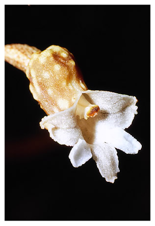
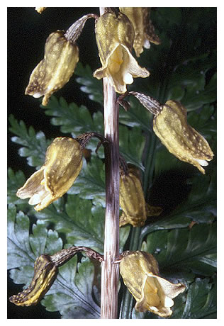
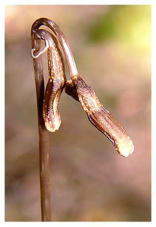
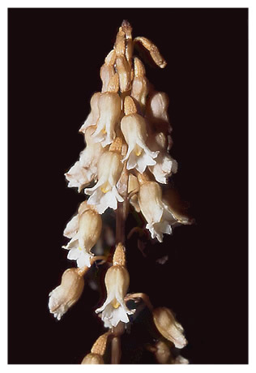

Potato Orchids Leafless Saprophytic Orchids |
|  |  |  |  | |||
Gastrodia cunninghamii Habitat: lowland to montane forest and common in mature pine plantations. Widespread. Key features: knobbly outer labellum and short column deep within the tube. |
Gastrodia molloyi Habitat: wide range of disturbed vegetation. Throughout. Key features: knobbly yellow to greenish flowers and long, yellow column with pollinia visible at the mouth of the tube. |
Gastrodia minor Habitat: often grows under manuka, pines, kamahi or gorse, or amongst Spanish heather. Throughout. Key features: few, smooth to ribbed flowers that scarcely open. |
Gastrodia sesamoides Habitat: wide range of vegetation including bark in traffic islands. Lowland to montane. South to Nelson. Key features: flowers smooth with few warts, yellow tipped column and pollina visible at the tube mouth. |
|||
Gastrodia cooperae
Habitat: forest and kanuka scrub. Wairarapa and Nelson. Key features: knobbly flower with a long column and black tipped labellum visible at the tube mouth. |

Guide To Gastrodia
|